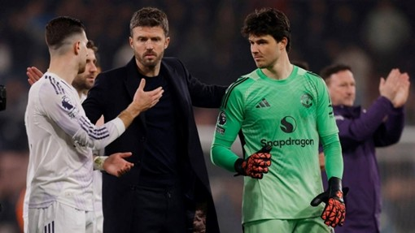

Mỹ – Iran đạt thỏa thuận về ngừng bắn, mở cửa eo biển Hormuz trong hai tuần
Mỹ và Iran đồng ý ngừng bắn trong hai tuần, Tehran sẽ cho phép tàu thuyền đi qua eo biển Hormuz trong thời gian này "với sự điều phối từ lực lượng vũ trăng".
ANHTheo tiền đạo Amad Diallo, nhiều cầu thủ Man Utd ủng hộ Michael Carrick trở thành HLV chính thức từ mùa 2026-2027. Hợp đồng làm HLV của Carrick hiện tại chỉ có hiệu lực đến hết mùa 2025-2026. Nhưng sau 10 trận ra mắt tích cực, gồm 7 chiến thắng, hai hòa và chỉ một thua, nhà cầm quân 44 này đang dần thuyết phục được giới chuyên môn về khả năng ký hợp đồng chính thức dài hạn. Theo Diallo, cầu thủ chơi cả 10 trận vừa qua, Carrick không chỉ từng cống hiến rất nhiều, gắn bó lâu dài, có kinh nghiệm phong phú, hiểu rõ CLB, mà còn đem lại những trải nghiệm tốt. "Với tư cách cầu thủ, chúng tôi không có quyền quyết định tương lai HLV. Nhưng sự thật là ông ấy đang làm rất tốt. Ông ấy có mối quan hệ rất tốt với mọi cầu thủ. Bạn cần một HLV như vậy để đưa CLB trở lại vị thế xứng đáng", Amad nói thêm.

Bryan Mbeumo, cầu thủ đang cùng Benjamin Sesko dẫn đầu danh sách lập công cho Man Utd mùa này, cũng đánh giá cao kinh nghiệm tại Man Utd và cách đối thoại với cầu thủ của Carrick, đồng thời dùng từ "rất tuyệt" để nói về 10 trận vừa qua. Đồng đội cũ Paul Scholes cũng ủng hộ Carrick làm HLV chính thức. Ông chỉ trích cựu HLV Ruben Amorim về việc cố nhét những thứ không phù hợp vào những vị trí không phù hợp, đồng thời ca ngợi Carrick về việc nhanh chóng vực dậy CLB từ đống đổ nát.
"Cậu ấy đã đặt bản thân vào vị thế tốt hơn so với khi mới nhận việc. Câu hỏi lớn là cậu ấy sẽ thế nào sau 10 đến 15 trận mùa tới. Chúng ta sẽ biết cậu ấy có phải là lựa chọn đúng hay không vào tháng 11", Scholes nói. Một cựu danh thủ khác của Man Utd, Nicky Butt cũng khuyên ban lãnh đạo nên sớm chốt Carrick. Ông cho rằng Carrick có ba ưu điểm là đang làm tốt công việc, hiểu rõ CLB và không gây rắc rối kiểu như cựu HLV Jose Mourinho. "Với tôi, nếu bạn không trao ghế HLV cho cậu ấy thì trao cho ai?".
Khi còn là cầu thủ, Carrick thi đấu 12 năm cho Man Utd, giành 18 danh hiệu, gồm cả Champions League 2008, Europa League 2017 và năm Ngoại hạng Anh. Sau màn ra mắt thành công của nhà cầm quân trẻ, Man Utd hiện xếp thứ ba Ngoại hạng Anh với 55 điểm, hơn đội xếp thứ sáu Chelsea bảy điểm sau 31 trận. Năm đội dẫn đầu sau 38 trận sẽ giành vé dự Champions League. Mùa trước, Man Utd kết thúc ở vị trí 15 và không giành được vé dự bất kỳ Cup châu Âu nào. Khi cựu HLV Amorim bị sa thải hôm 5/1, "Quỷ Đỏ" xếp thứ sáu.

Mỹ và Iran đồng ý ngừng bắn trong hai tuần, Tehran sẽ cho phép tàu thuyền đi qua eo biển Hormuz trong thời gian này "với sự điều phối từ lực lượng vũ trăng".

Người dân Iran tập trung trên đường phố Tehran, vậy có và hô khẩu hiệu sau khi lệnh ngừng bắn hai tuần với Mỹ được công bố.

Nằm ở bộ nam eo biển Hormuz, cách Iran gần 34 km, bán đảo Musandam của Oman đang chứng kiến những hệ lụy về kinh tế và đời sống khi xung đột bùng phát.